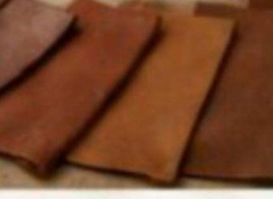
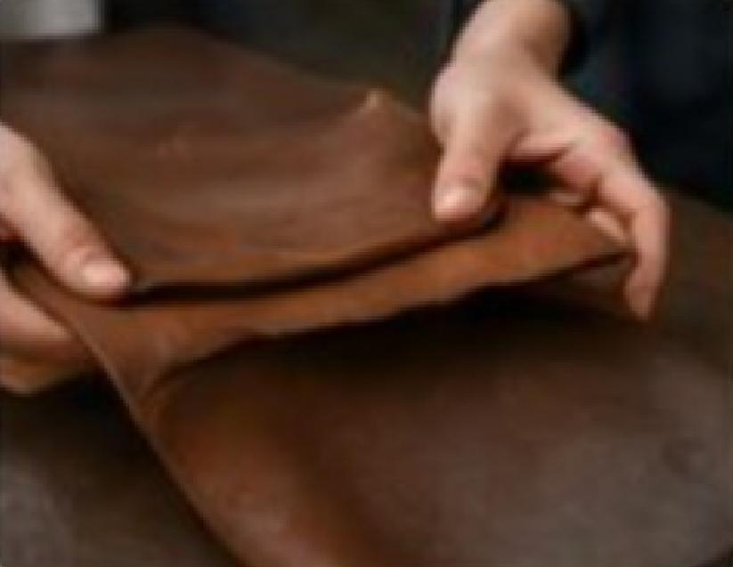

MODA LIMPIA,
PLANETA VIVO

MISIÓN
Impulsar un modelo de curtido ecológico con guamúchil y otros recursos naturales, reduciendo el uso de químicos tóxicos y promoviendo prácticas sostenibles que fortalezcan la economía circular, la resiliencia ambiental y el bienestar de las comunidades de la Ciénega de Chapala.

VISIÓN
Ser referente nacional e internacional en innovación verde para la industria del cuero, posicionando a ECOGUAM como un proyecto que transforma residuos en recursos, protege los ecosistemas y genera desarrollo sostenible con identidad regional y proyección global.

VALORES

Sostenibilidad
Compromiso con procesos que respetan la naturaleza y reducen la contaminación.

Innovación
Desarrollo de soluciones creativas basadas en ciencia y tradición local.

Responsabilidad Social
Integración de comunidades rurales en cadenas productivas justas.

Identidad regional
Orgullo por las raíces culturales y ecológicas de la Ciénega de Chapala.

Transparencia
Procesos claros y confiables en cada etapa de producción.

Colaboración
Trabajo conjunto entre academia, industria y sociedad para lograr impacto positivo.
Objetivo
ECOGUAM impulsa el curtido ecológico de pieles con compuestos orgánicos del guamúchil, promoviendo innovación verde y desarrollo sostenible en la Región Ciénega de Chapala Michoacana..
¿Por qué elegir ECOGUAM?
Descubre la diferencia en cada aspecto
Curtido Tradicional

VS
★ MEJOR OPCIÓN
Con ECOGUAM

| Criterio |
Curtido Tradicional |
✦ Con ECOGUAM |
| Flexibilidad |
⭐⭐⭐ |
⭐⭐⭐⭐ |
| Resistencia a la tracción |
⭐⭐⭐⭐ |
⭐⭐⭐⭐ |
| Color |
⭐⭐⭐ |
⭐⭐⭐⭐ |
| Olor |
⭐ |
⭐⭐⭐⭐⭐ |
| Impacto Ambiental |
⭐ |
⭐⭐⭐⭐⭐ |
| Aceptación general |
⭐⭐⭐ |
⭐⭐⭐⭐ |